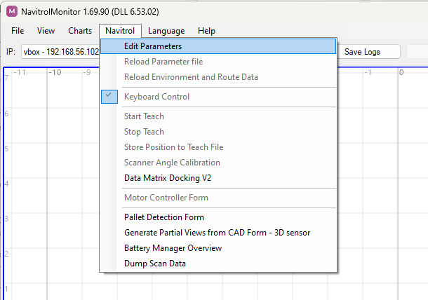
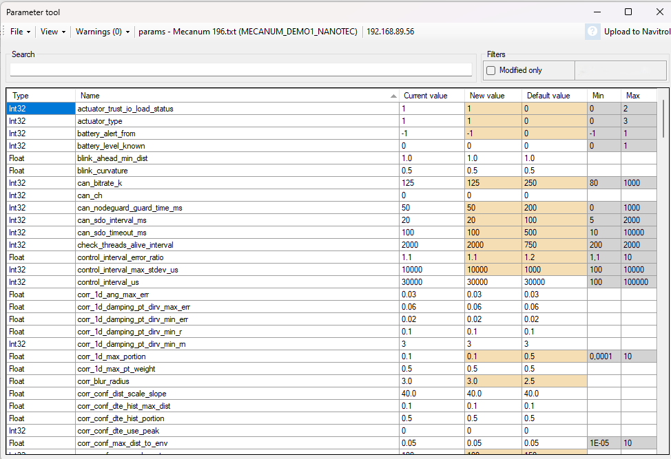
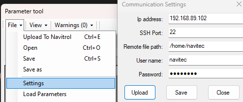
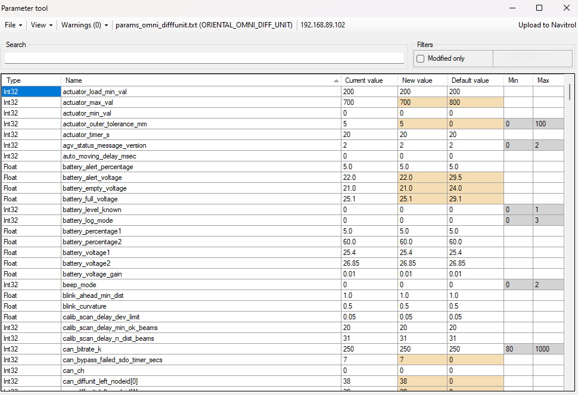
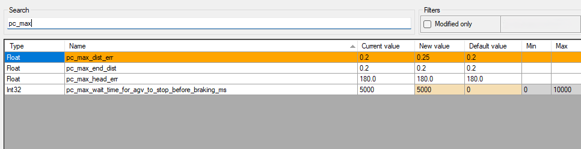
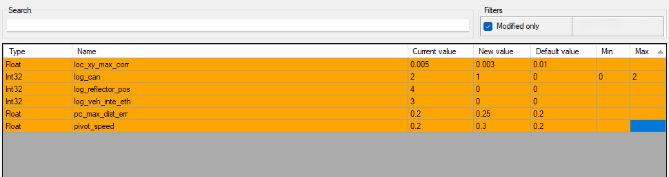
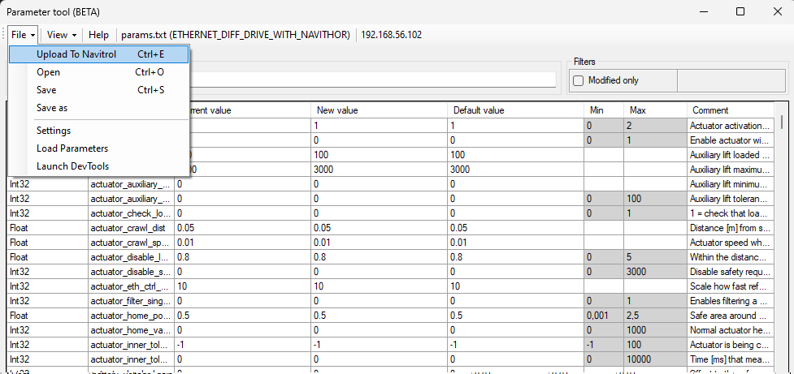
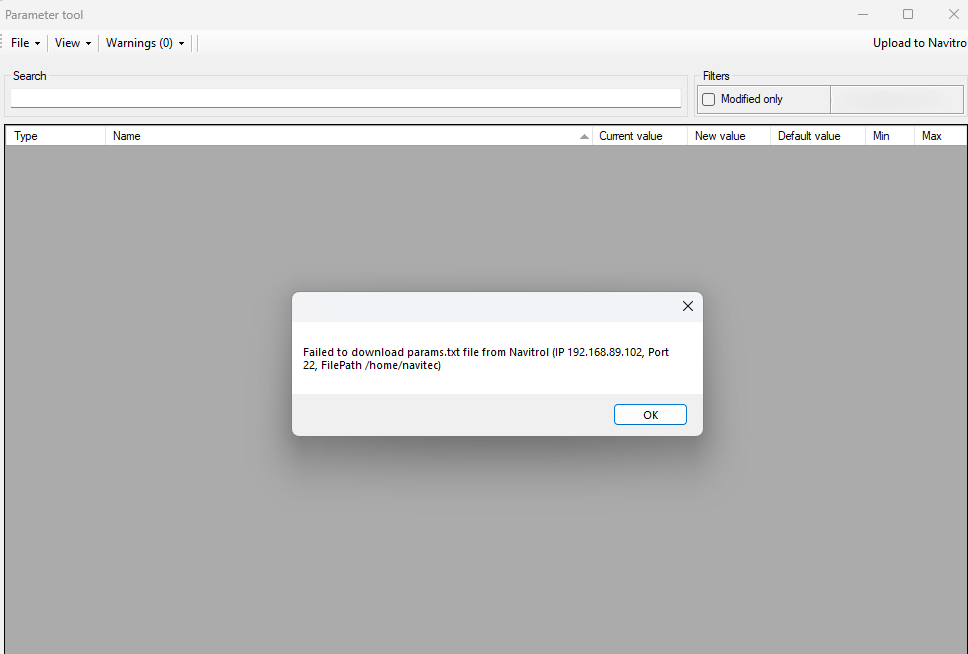
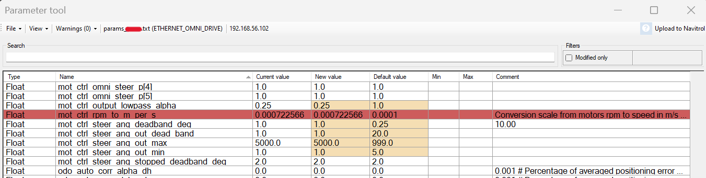

Parameter Tool UI (BETA)
Updated 20.06.2024
Overview
Introduction
Parameter tool is a user interface to change Navitrol parameters (params.txt file). With this tool the user can:
- Open a Navitrol parameter file and change parameter values as needed
- Load Navitrol parameter files offline and online
- Observe parameters current, default, minimum and maximum value
- Modify parameter values graphically and save the modified parameters to Navitrol directly (offline and online when Navitrol is running).
- Observe parameter descriptions (by comment column or hovering on top of the parameter)
 
Parameter Tool
Parameter Tool Beta version is available on Navitrol 6.54
Please note that the Parameter Tool is still in beta-phase. The development for the Tool is ongoing and most of the limitations will only apply for the beta version. In addition to this, the beta version might have many unexpected defects that Navitec Systems have not found during initial testing.
Requirements
NavitrolMonitor 6.54 includes the Parameter Tool Beta version. User should use the same Navitrol and Navitrolmonitor version when changing parameters with the Parameter Tool UI. Using a higher version of NavitrolMonitor than Navitrol can lead to a situation of adding invalid parameters to existing Navitrol.
Limitations
The Parameter tool modifies the params.txt file and changes parameter order and removes extra comment lines between parameters. The following things will occur when parameters are modified using the Parameter Tool:
- Parameter order will change in params.txt file
- Extra comment lines on parameter files are removed.
- Separate comment lines without any preceding parameter value are removed
- The parameter comments (# after parameter value) will stay as user has written them.
- A parameter file needs to contain all required parameters for this machine type (machine_type_id)
- A parameter file that contains a subset of parameters cannot be opened. For example:
- Parameter zone files (params_zoneX.txt) or parameter override files (params_override.txt)
- A parameter file that contains a subset of parameters cannot be opened. For example:
Dependencies
Quick Guide
- Connect to an AGV with NavitrolMonitor
- Open Parameter tool by clicking "Edit Parameters"
- Parameters from Navitrol are automatically downloaded to Parameter Tool. If not, click File --> Load Parameters
- Modify parameters in Parameter tool UI. Click "Upload To Navitrol" after parameters changes
- Wait until Navitrol parameters are saved and parameters automatically reloaded.
How To use
Load Parameters to Parameter Tool
Navitrol parameter file can be loaded to Parameter tool when Navitrol is offline or online. The preferred way to use parameter tool is when Navitrol is running.
Parameter Tool will automatically take the same IP as user has defined in NavitrolMonitor. When user clicks "Edit parameters", Parameter Tool will open and parameters automatically uploaded from Navitrol. If parameters are not listed in Parameter Tool, user can click Load Parameters or change the IPC Communication settings.

Parameters can be loaded from Navitrol or a local parameter file can be opened
A parameter file can also be opened without the connection to Navitrol. This can be done by clicking File --> Open and choosing the parameter file from your local drive. Please note that the parameter file format must follow Navitrol parameters formatting.
Parameter tool will list all loaded parameters. By default current, new, default, minimum and maximum values for each parameter is listed. These can be changed under View on the top navigation bar. Loaded parameters that have different than default value are shown in light yellow (wheat) color.

Loaded params*.txt file on Parameter Tool
Modify Parameters And Upload to Navitrol
Parameters are modified by changing the value on New Value column. Always press enter to apply the new value. This triggers a validation step. User can search also different parameters by typing the parameter name on Search field.
After a parameter value has been changed, the parameter row will turn orange. 
Parameter values that user has modified will change their color to orange
User can change multiple parameters at once if needed. After all parameters have been modified, the modified parameters can be listed by checking modified only Filter.

Modified parameters can be listed to check if modified values still need more adjusting
After the parameters have been modified with desired values, save the parameters and upload to Navitrol.

Save and Upload parameters after modifying them
Adding new parameters to the parameter file
By default the parameter tool shows only the parameters that already exist in the params.txt file. To add new parameters to the file click on the "Show all available" filter to see also the parameters that are not in the params.txt. You can then search for the parameters normally and add a new value to any parameter that does not already exist in the parameter file. Always press enter after modifying the new value column. This triggers a validation step. Saving the parameters will automatically add the parameters with new values to the parameter file. Currently the parameter tool does not cross check parameters like Navitrol does so by adding new parameters it is possible to cause parameter validation errors on Navitrol. In such cases refer to the troubleshooting section.
Removing parameters from the parameter file
To remove a parameter from the parameter file, change the value of the parameter to an empty string. Parameter tool does not allow removing required parameters but again it's possible that removing parameters causes invalid parameter combinations. In such cases Navitrol will report ERROR_PARAM_PARSE after uploading and Navitrol does not anymore start after restarting the system. To recover please refer to the troubleshooting section.
Troubleshooting
Wrong parameters were changed, I need to return the previous ones
A backup of each downloaded parameter file is saved under NavitrolMonitor/ParamsTool.
A backup file is saved the following format: params_Navitrol_yyyy_MM_dd-HHmmss.txt
I added or removed a parameter and Navitrol does not start anymore
Most likely this is because Navitrol does not know the added parameter or a parameter cross check forbids using the new parameter value. To recover from a situation like this you can open the parameter tool in offline mode and remove the parameter you added. Another recovery option is to upload a backup parameter file to Navitrol. Backups locations is instructed above.
Parameters are not loaded to Parameter Tool
If parameters are not seen in Parameter Tool, often the reason is that there is no connection to the IPC.

The following things should be validated:
- Is the IP address of the IPC valid
- Is the Port valid
- Are SSH Username and Password valid
- Does the IPC have an existing params.txt file in path /home/navitec (Remote file path)
A parameter is highlighted with red
Parameters that are invalid for the machine type are highlighted with red. These parameters need to be manually removed from the params.txt file.
